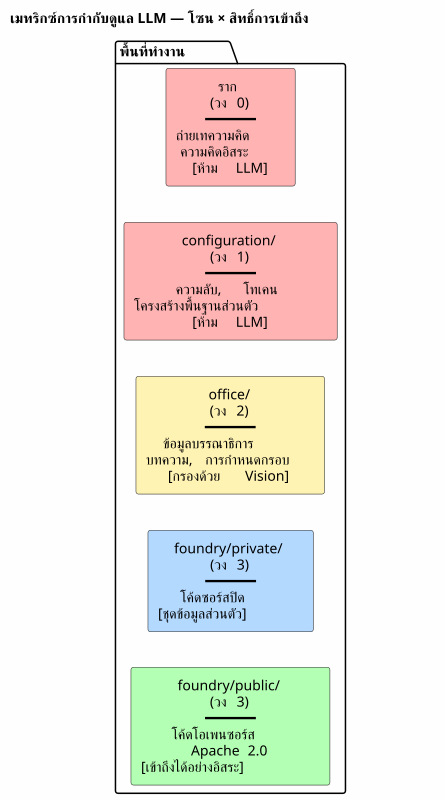
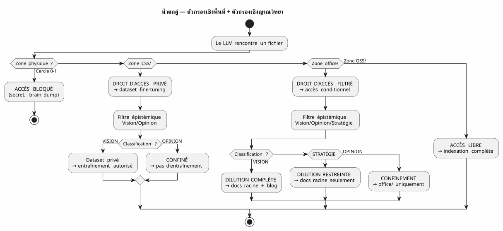
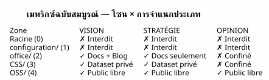

เมทริกซ์การกำกับดูแล LLM — เหตุใดความปลอดภัยของ AI ของคุณจึงเริ่มต้นจากโครงสร้างแบบต้นไม้
เผยแพร่เมื่อ 04 May 2026
เป็นเวลาหลายเดือน ฉันได้กองสะสมกฎการกำกับดูแลเอเจนต์ไว้ ไฟล์ EAGER รายการตรวจสอบแบบ LAZY โปรโตคอลการสิ้นสุดเซสชันหกขั้นตอน และถึงกระนั้น ยังมีคำถามหนึ่งที่ยังคงค้างอยู่: LLM รู้ได้อย่างไรว่าสิ่งที่มัน มีสิทธิ์ทำอะไรกับไฟล์ ?
คำตอบไม่ได้อยู่ในพรอมต์ แต่อยู่ในระบบไฟล์
นี่คือข้อกำหนดสถาปัตยกรรมที่ทำให้คำตอบสามารถนำไปใช้ได้ — la เมทริกซ์การกำกับดูแล LLM.
ปัญหา: Prompt Engineering คือปราสาททราย
เมื่อเราให้ไฟล์แก่ LLM เราก็ให้ทุกอย่างแก่มัน เนื้อหา ใช่ — แต่ยังรวมถึงการไม่มีมาตรการป้องกันด้วย LLM ไม่รู้ว่าไฟล์นี้มี ความลับ ความเห็นเชิงคาดเดา หรือโค้ดแบบ closed source มันจะจัดทำดัชนี สรุปมัน อ้างอิงมัน ผสมมันกับข้อมูลอื่น — และอาจจะ เผยแพร่ใน embedding สาธารณะหรือคำตอบของผู้ใช้
กลอุบายแบบคลาสสิกคือพรอมป์ต์:
"Tu es un assistant sécurisé. Ne divulgue jamais d'informations confidentielles.
Si tu détectes un secret, ignore-le. Si tu détectes une opinion, ne la répète pas."พรอมต์นี้มีสามปัญหา:
-
มันขึ้นอยู่กับความเต็มใจของ LLM โมเดลที่ใหญ่พอที่จะ
การแก้ไขบั๊กที่ซับซ้อนนั้นใหญ่พอที่จะข้ามคำสั่งหนึ่ง ด้านความปลอดภัยที่จมอยู่ในบริบท 200k โทเค็น
-
มันเป็นเรื่องของบริบท ไม่ใช่โครงสร้าง เปลี่ยนพรอมป์ เปลี่ยน LLM,
เปลี่ยนเซสชัน — แล้วกฎก็หายไป
-
มันสเกลไม่ได้ ทุกประเภทไฟล์ใหม่ ทุกระดับใหม่
ความเป็นส่วนตัวกำหนดให้ต้องมีข้อกำหนดใหม่ พร้อมต์ของคุณกลายเป็น ข้อความทางกฎระเบียบที่ไม่มีใครอ่านจนจบทั้งหมด
|
ความปลอดภัยของระบบต้องไม่ขึ้นอยู่กับคำสั่งที่เรา อาจลืม ข้ามไป หรือไม่โหลดก็ได้ มันต้องขึ้นอยู่กับ กำแพงที่ไม่อาจข้ามผ่านได้โดยไม่ต้องการอย่างชัดแจ้ง |
คำตอบของฉัน: เมทริกซ์ 4×4
โซลูชันที่ฉันนำไปใช้ในเวิร์กสเปซของฉันคือ เมทริกซ์โซน × สิทธิ์การเข้าถึง LLM ไม่ได้ขอให้ LLM ระมัดระวัง มันทำให้ ความประมาทที่เป็นไปไม่ได้ในเชิงโครงสร้าง

ห้าโซน (มิติเชิงพื้นที่ — GDPR)
แต่ละโซนของเวิร์กสเปซมีระดับ GDPR ซึ่งกำหนด*ที่ใด*ที่ไฟล์สามารถ ถูกกำหนดเส้นทาง:
โซน |
ระดับ GDPR |
เนื้อหา |
สิทธิ์การเข้าถึง RAG สาธารณะ |
ราก |
0 — ส่วนตัว |
การเทความคิดทั้งหมด การสนทนากับ LLM |
ห้าม— ไม่ถูกจัดทำดัชนีเลย |
|
1 — จำกัดเฉพาะเจ้าของ |
ความลับ โทเค็น คีย์ API |
ห้าม— ไม่เคยถูกจัดทำดัชนี |
|
2 — จำกัดเฉพาะผู้ร่วมงาน |
ข้อมูลเชิงบรรณาธิการ การกำหนดกรอบ การอบรม |
กรองแล้ว— การมองเห็นเท่านั้น |
|
3 — เปิดตามเงื่อนไข |
โค้ดแบบ closed source, SaaS ที่ไม่เปิดเผยต่อสาธารณะ |
ห้าม— ชุดข้อมูลส่วนตัวเท่านั้น |
|
4 — กลุ่มผู้ชมแบบเนทีฟ |
โค้ด Apache 2.0, ปลั๊กอินที่เผยแพร่แล้ว |
อิสระ— การจัดทำดัชนีแบบเต็มรูปแบบ |
กฎนั้นง่ายมาก: พาธของไฟล์เป็นตัวกำหนดว่า LLM สามารถทำอะไรกับมันได้ ไม่มีเมทาดาทาที่ต้องดูแลรักษา ไม่มีแท็กที่ต้องเพิ่มใน frontmatter ไม่ต้องจัดประเภทด้วยตนเองทุกครั้งที่คอมมิต ไฟล์อยู่ใน`OSS/(No text provided to translate) มันเป็นสาธารณะ มันอยู่ใน`configuration/? เขาเป็นคนที่แตะต้องไม่ได้
การจำแนกประเภทเชิงญาณวิทยา (มิติที่สอง)
มิติเชิงพื้นที่บอกว่า จะกำหนดเส้นทางไปที่ใด แต่มีแกนที่สองซึ่งตั้งฉาก: อะไร ที่ต้องกำหนดเส้นทาง. ไฟล์บางไฟล์ในพื้นที่ที่ได้รับอนุญาตมีข้อมูล ซึ่งไม่ควรถูกเจือจางตามที่เป็นอยู่:

ตารางการจำแนกประเภททางญาณวิทยา ซึ่งจารึกไว้ในกฎข้อ 2bis แห่งธรรมาภิบาลของฉัน เอเจนต์ :
| สถานะ | คำนิยาม | สัญญาณ LLM | ปลายทาง | | วิสัยทัศน์ | สถาปัตยกรรมที่มั่นคงแล้ว, แพตเทิร์นที่ผ่านการทดสอบ | ภาษาเชิงประกาศ, การอ้างอิงเซสชัน/การทดสอบ | การเจือจางแบบสมบูรณ์ + บล็อก | | กลยุทธ์ | การวางตำแหน่งทางธุรกิจ, การกำหนดราคา | คำศัพท์ด้านตลาด, การแข่งขัน | เอกสารรากเท่านั้น | | ความเห็น | การคาดเดา, สมมติฐานที่ยังไม่ได้รับการยืนยัน | ภาษาเชิงสมมติ, สัญชาตญาณ | การกักบริเวณในวงกลม 0 |
การผสมผสานของสองมิติ — โซนทางกายภาพ × การจำแนกประเภทเชิงญาณวิทยา — ขึ้นรูปมันเมทริกซ์สมบูรณ์:

LLM บริโภคเมทริกซ์นี้อย่างไร
เมทริกซ์ไม่ใช่เอกสารที่ LLM อ่าน แต่เป็น ข้อจำกัด โดยนัย ที่ถูกเข้ารหัสในเวกเตอร์บริบทแบบผสม (EPIC 9 — กำลังดำเนินการ ของการดำเนินการ).
นี่คือสิ่งที่ LLM ได้รับในแต่ละเซสชัน:
VECTEUR COMPOSITE DE CONTEXTE
├── RAG pgvector → OSS/ + office/Vision
│ (similarité sémantique sur contenu publiable)
├── Knowledge Graph graphify → OSS/
│ (relations exactes entre artéfacts publics)
├── Knowledge Graph privé → CSS/
│ (relations entre code closed source — jamais exporté)
├── Métadonnées de zone → chaque fichier taggé par zone physique
│ (le LLM sait s'il est dans office/ ou OSS/)
└── Historique des décisions → WORKSPACE_VISION.adoc
(contexte temporel des arbitrages)ในทางปฏิบัติ เมื่อ LLM บอกฉันว่า:
Je vais indexer le contenu de edster/ pour enrichir le knowledge graph...ข้อมูลเมตาของโซนตอบกลับก่อนที่ LLM จะจบประโยคด้วยซ้ำ: edster/`อยู่ใน`CSS/, ระดับ 3 →ห้ามเข้าถึง knowledge graph สาธารณะ RAG ไม่เห็นมัน กราฟไม่แตะต้องมัน คำตอบของผู้ใช้ไม่ อย่าอ้างถึงมัน
|
ภววิทยาเชิงพื้นที่ทำงานเป็นสิทธิ์ของ Unixสำหรับ LLM คุณไม่ได้ขอให้กระบวนการระมัดระวังกับ`/etc/shadow`No source text was provided to translate. Please send the French text you’d like translated into Thai. คุณปฏิเสธการเข้าถึงเพื่ออ่านแก่เขา หลักการเดียวกัน |
การนำไปใช้: งาน Gradle แบบมีชนิด
เมทริกซ์ไม่ใช่ปรัชญา มันคือโค้ด นี่คือสัญญาของงาน Gradle ที่นำไปใช้งาน:
abstract class ZoneAwareIndexer @Inject constructor(
private val rootDir: DirectoryProperty,
private val configServer: ConfigServerProperty // → configuration/
) : DefaultTask() {
@Input
val zoneFilter: SetProperty<Zone> = project.objects.setProperty(Zone::class.java)
@OutputFile
val ragIndex: RegularFileProperty = project.objects.fileProperty()
@TaskAction
fun index() {
val allowedPaths = zoneFilter.get().flatMap { it.resolve(rootDir.get()) }
val forbiddenPaths = Zone.RESTRICTED.resolve(rootDir.get())
+ Zone.INTIMATE.resolve(rootDir.get())
// Le RAG ne voit jamais configuration/ ni la racine
// CSS/ alimente un index privé, pas celui-ci
// office/ est filtré par le classifieur Vision/Opinion
}
}
enum class Zone {
INTIMATE, // Cercle 0 — racine
RESTRICTED, // Cercle 1 — configuration/
EDITORIAL, // Cercle 2 — office/
CLOSED_SOURCE, // Cercle 3 — foundry/private/
OPEN_SOURCE // Cercle 3 — foundry/public/
}งานนี้*สามารถทดสอบได้* คุณสามารถเขียนการทดสอบที่ตรวจสอบว่า:
@Test
fun `le RAG n'indexe jamais configuration`() {
val index = ZoneAwareIndexer(rootDir, configServer)
index.zoneFilter.set(setOf(Zone.OPEN_SOURCE, Zone.EDITORIAL))
index.index()
assertThat(index.ragIndex).doesNotContain("configuration/")
}
@Test
fun `le code closed source est exclu du RAG public`() {
val index = ZoneAwareIndexer(rootDir, configServer)
index.zoneFilter.set(setOf(Zone.OPEN_SOURCE)) // OSS only
assertThat(index.ragIndex).doesNotContain("edster")
}380 การทดสอบ, 380 PASS เช่นเดียวกับ plantuml-gradle — ความปลอดภัยได้รับการทดสอบ, ไม่คาดคิด
ทำไมนี่จึงเป็นแถลงการณ์ ไม่ใช่แค่สเปก
เอกสารนี้เป็นข้อกำหนดสถาปัตยกรรม เนื่องจากกำหนดว่า:
-
บางขนาด(เชิงพื้นที่, เชิงญาณวิทยา)
-
บางกฎเชิงกำหนด(โซน → สิทธิ์การเข้าถึง)
-
Un สัญญาตามภารกิจ(Gradle แบบมีชนิด, ทดสอบได้)
-
หนึ่งการอิมพลีเมนต์อ้างอิง(พื้นที่ทำงานของฉัน)
แต่มันก็ยังเป็นแถลงการณ์เพราะเขาแสดงจุดยืนต่อประเด็นถกเถียง กว้างขึ้น: จะกำกับดูแลการเข้าถึงข้อมูลของ LLM อย่างไร?
คำตอบจากภาคอุตสาหกรรมคือ prompt engineering + guardrails
ตัวจำแนกประเภทแบบ post-hoc คำตอบของฉันคือ: จัดเก็บไฟล์ของคุณไว้ใน โฟลเดอร์ที่ถูกต้อง ส่วนที่เหลือเป็นอัตโนมัติ
|
แถลงการณ์นี้ไม่ได้กล่าวว่า "LLM ต้องได้รับการจัดแนว" แต่กล่าวว่า: "การจัดแนว ของ LLM ที่มีต่อกฎความปลอดภัยของคุณเป็นผลสืบเนื่องมาจากระบบของคุณ ไฟล์ ไม่ใช่จากพรอมต์ของคุณ |
แคสเคดที่สมบูรณ์ — จาก Brain Dump สู่บทความบล็อก
เพื่อแสดงให้เห็นวงจรที่สมบูรณ์ นี่คือวิธีที่แนวคิดเรื่องเมทริกซ์นี้ถือกำเนิดขึ้น และได้ถูกเจือจาง:
Session 4 mai 2026 — Feedback global du workspace
│
├→ Le LLM identifie : "la dualité public/privé est invisible"
│ → Classifié VISION (constat architectural vérifiable)
│
├→ PICTURE_ME_ROLLIN_MATRICE_4X4.adoc — STIMULUS (Cercle 0)
│ → Brain dump structuré, classification VISION confirmée
│
├→ DILUTION → WORKSPACE_AS_PRODUCT.adoc (section Matrice 4×4)
│ → La spec vit dans les documents racine
│
├→ DILUTION → WORKSPACE_ORGANIZATION.adoc (OSS/CSS)
│ → La granularisation est documentée
│
└→ ARTICLE 0117 (ce document) → cheroliv.com
→ La VISION est publiéeสิ่งที่เริ่มต้นจากการสังเกตระหว่างเซสชัน ("เฮ้ RAG ไม่รู้ ที่ edster เป็น closed source") กลายเป็นข้อกำหนดทางสถาปัตยกรรม เผยแพร่ภายในเวลาไม่ถึงหนึ่งเซสชัน นี่คือแพตเทิร์น STIMULUS ที่กำลังทำงานอยู่
ข้อดี/ข้อเสีย
| แนวทางนี้ (ภววิทยาเชิงพื้นที่ + เมทริกซ์) | แนวทางแบบคลาสสิก (Prompt + Guardrails) |
|---|---|
เชิงกล — ระบบไฟล์บล็อกการเข้าถึง ไม่ใช่ LLM |
แบบประกาศ — พรอมต์ขอให้ LLM ระมัดระวัง |
ทดสอบได้ — สัญญาของทาสก์ Gradle ได้รับการตรวจสอบโดยการทดสอบ 380+ รายการ |
ไม่สามารถทดสอบได้ — "LLM ได้ปฏิบัติตามกฎหรือไม่?" เป็นคำถามปลายเปิด |
เป็นอิสระจาก LLM — เปลี่ยนโมเดล โฟลเดอร์ยังคงอยู่ |
ขึ้นอยู่กับ LLM — แต่ละโมเดลตีความพรอมป์แตกต่างกัน |
Scalable — ประเภทข้อมูลใหม่ = โฟลเดอร์ใหม่ ไม่มีการเปลี่ยนแปลงโค้ด |
ไม่สามารถขยายขนาดได้ — ประเภทข้อมูลใหม่ = ข้อกำหนดพรอมป์ใหม่, ความเสี่ยงใหม่ต่อการถดถอย |
ตรวจสอบได้ — ระบบไฟล์คือร่องรอยการตรวจสอบ |
ไม่สามารถตรวจสอบได้ — พรอมต์ไม่มีประวัติ ไม่มี diff ไม่มี blame |
ข้อจำกัด : ต้องมีวินัยในการจัดองค์กรตั้งแต่เริ่มต้น |
ข้อจำกัด : ต้องมีวินัยในการเขียนพรอมต์ในทุกเซสชัน |
บทสรุป: จัดระเบียบไฟล์ของคุณ ไม่ใช่พรอมป์ต์ของคุณ
เมทริกซ์การกำกับดูแล LLM ที่ฉันเพิ่งอธิบายไปไม่ใช่ผลิตภัณฑ์ นี่คือข้อกำหนดสถาปัตยกรรม— และนั่นคือเหตุผลว่าทำไมเธอจึงเป็น ที่สามารถเผยแพร่ได้
สิ่งที่ทำให้มันทนทานคือมันไม่ขออะไรจาก LLM เลย มันไม่ได้… ไม่ไว้วางใจ มันไม่ได้ขึ้นอยู่กับการจัดแนวของมัน ความเข้าใจของมัน ของภาษาฝรั่งเศส หรือความปรารถนาดีของตน มันขึ้นอยู่กับระบบไฟล์ — ชั้นที่ต่ำที่สุด เสถียรที่สุด และผ่านการทดสอบมากที่สุดของสแตกทั้งหมด
เมื่อฉันบอก LLM ของฉันว่า "คุณสามารถจัดทำดัชนีทุกอย่างใน`OSS/, ไม่มีอะไรใน `configuration/, et `office/`เฉพาะเมื่อจัดประเภทเป็น Vision เท่านั้น นี่ไม่ใช่คำสั่ง แต่เป็น ฟิลเตอร์ — ที่ถูกนำไปใช้ใน Kotlin, ตรวจสอบแล้วด้วยการทดสอบ 380 รายการ ซึ่งดำเนินการก่อนที่ LLM จะเห็นข้อมูล
นี่คือความแตกต่างระหว่างการบอกใครสักคนว่า "อย่ามองในลิ้นชักนั้น และล็อกลิ้นชักด้วยกุญแจ การกำกับดูแลเอเจนต์ที่ฉันสร้างมาตั้งแต่ เดือนต่างๆ คือกุญแจ เมทริกซ์คือแผนผังของเฟอร์นิเจอร์